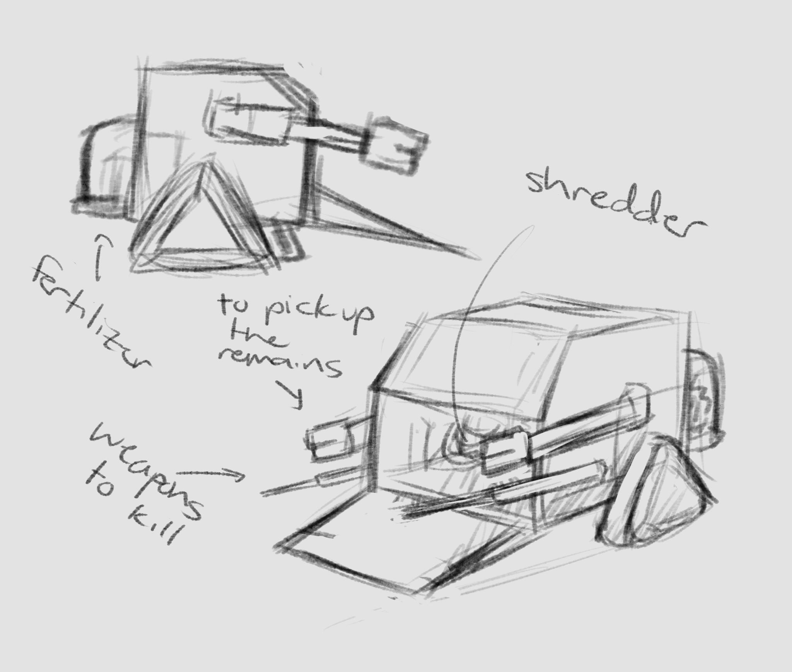

And since these robots are environmentally friendly, we won't have to spend that much money on them. Furthermore, the preservation of life and biodiverity will help us earn more natural resources and eventually restore a clean and healthy planet.
Overfishing:

The MakoBot uses a sensor to distinguish differnt species of aquatic life and 'eats' only a specific type of fish that is filtered in the filter menu of the robot. The fish will be stored inside the robots belly after being 'eaten.' No teeth will be added to prevent the fish from being damaged. Another good thing about this robot is that it has a limitation of how much fish it should 'eat'which is around a maximum of 1.3kg, the same maximum amount of fish that a shark eats per day. Makobot will be fueled using the ocean water around it.
Pollution:

Polly is designed to use air, water, and land pollution and transform it into substances beneficial to the public. To put it simply, Polly takes in all the toxic waste in the air, water, and land, converts it into fresh resources, and exhales it out. Basically, a pollution filter. The bot will be fueled using solar energy as well instead of gas.
Invasive Species:

Ivy has battlebot-like features that helps it look for and hunt the invasive species. After killing them with specific type of weapons, the bot sweeps up the remains inside its body, shreds them with the shredder, and turns them into a natural fertilizer for the crops. Ivy can be an automated bot or a pilot powered one, depending on how difficult it is to defeat a cerain species. It is also powered with solar energy.